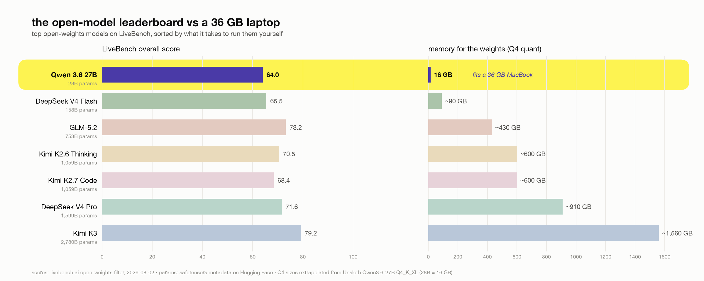

the best local model to run on your laptop for $0
I get this question a lot, and I ask this to myself almost every 3 weeks. I ask it so often that I built shouldirunthis.xyz to settle the money side of it (buy a rig, or keep your sub?). The model side of the question has an answer too, and it is probably Qwen 3.6 27B. In this article I am going to show you the best way to get that lil, capable thing on your machine.
Let’s take a look at why I chose that model.
Look at LiveBench’s open-weights leaderboard and count the models you could run on a MacBook:

*Scores: LiveBench open-weights filter, accessed 2026-08-02. Parameter counts: each model’s safetensors metadata on Hugging Face. Q4 weight sizes extrapolated from the measured 28B → 16 GB ratio of Unsloth’s Q4_K_XL quant.*
Every model above Qwen 3.6 27B needs at least 90 GB of RAM. The gap to the next-smallest model is 5.6×. If your machine is a normal high-end laptop, the “best open model” debate collapses to only one. LiveBench prices hosted Qwen 3.6 27B at $0.202 per successful task; my laptop serves it for the cost of electricity, with nothing going out of my lappy.
That table is a wall, and people are throwing serious money at it. @0xSero wrote a great piece on how a Discord community got GLM-5.2 (row 2) running at home for 15,000$ with 3 DGX Sparks and some wild sub-4-bit quantization. Even their most extreme trick (2-bit weights with an FP4 rescue path) would put the *smallest* model above Qwen at ~40 GB for weights alone.
So how much agent can you actually squeeze out of that one row? Here’s my setup, tested on my MacBook Pro M4 Max with 36 GB.
The stack
- Model: Qwen3.6-27B, Unsloth
UD-Q4_K_XL(16 GB). The leaderboard’s only laptop-sized model, and it’s tuned for agentic coding. - Server:
llama-serverfrom llama.cpp. Gives me the three flags that make or break local agents (§2), speaks plain OpenAI API, no key needed. - Harness: omp (Oh My Pi). Its edit format and prompts are tuned for weaker models. The omp team measured a 6.7% → 68.3% task pass-rate jump on a small model from the edit format alone.
Behold, the stack. There are people behind each row: the quant is by the Unsloth team (@danielhanchen and crew), and omp is Can Bölük’s fork of Mario Zechner’s Pi. llama.cpp needs no intro. s/o to all the chads above
1. Install omp
curl -fsSL https://omp.sh/install | sh -s -- --binaryInstalls to ~/.local/bin/omp.
Gotcha (Apple Silicon): the installer gave me the darwin-x64 binary on an M4 Max, so it ran under Rosetta and warned about missing AVX. Check with file ~/.local/bin/omp; if it says x86_64, replace it:
curl -fsSL -o ~/.local/bin/omp \
https://github.com/can1357/oh-my-pi/releases/latest/download/omp-darwin-arm64
chmod +x ~/.local/bin/omp
omp --version # omp/17.2.4 at time of writingAlternative installs: brew install can1357/tap/omp or bun install -g @oh-my-pi/pi-coding-agent (needs bun ≥ 1.3.14).
2. Serve the model
Get the GGUF (~16 GB). -C - resumes a dropped download, so rerun the same command if it dies, but never run two copies at once:
mkdir -p ~/qwen-models
curl -L -C - -o ~/qwen-models/Qwen3.6-27B-UD-Q4_K_XL.gguf \
https://huggingface.co/unsloth/Qwen3.6-27B-GGUF/resolve/main/Qwen3.6-27B-UD-Q4_K_XL.ggufThe model’s general.architecture is qwen35, supported by llama.cpp b9518 and later. Launch script (~/qwen-models/run-qwen-server.sh):
#!/bin/sh
L="$HOME/llama.cpp-bin/extracted/llama-b9518" # your llama.cpp bin dir
exec env DYLD_LIBRARY_PATH="$L" "$L/llama-server" \
-m "$HOME/qwen-models/Qwen3.6-27B-UD-Q4_K_XL.gguf" \
-a qwen3.6-27b \
--host 127.0.0.1 --port 8090 \
-c 49152 -ngl 99 --jinja \
-np 1Run it in the background from a normal terminal:
nohup ~/qwen-models/run-qwen-server.sh > ~/qwen-models/llama-server.log 2>&1 &Three of these flags are the difference between “works” and “unusable”, and none of them is the default:
--jinjais required for agent use. It enables the model’s own chat template
so tool calling works. Without it, tool calls break in ways that look like model stupidity.
-np 1might be a problem. The default (-np -1, auto) creates multiple
server slots, each with its own prompt cache. I watched requests hop from slot 3 to slot 2 in the logs, and every hop re-processes the entire system prompt from scratch (2+ minutes at omp’s default size). Give it one slot.
-c 49152is the context size. omp’s default system prompt alone is ~21.6k
tokens (§4). KV cache for this model is cheap (a measured ~150 MB at 21.6k tokens), so 48k costs well under 500 MB on top of the 16 GB of weights. Don’t go below ~32k with omp. The model itself trains to 262k context, thus with more RAM the ceiling is higher.
The small print: -a qwen3.6-27b gives the API a clean model id, and -ngl 99 is full Metal offload. --port 8090 is only there because 8080 (llama.cpp’s default) was taken by an SSH tunnel on my machine. If your 8080 is free, drop the flag and the baseUrl override in §3, and omp discovers the server with zero config.
One flag I tried and then removed: --cache-reuse 256 (KV-cache reuse via shifting on partial prefix changes). The server disables it for this model with cache_reuse is not supported by this context; the qwen35 attention layout doesn’t support KV shifting. Worth adding back if you serve a model where it takes.
3. Point omp at it
~/.omp/agent/models.yml:
providers:
llama.cpp:
baseUrl: http://127.0.0.1:8090
auth: none
api: openai-completions
discovery:
type: llama.cpp~/.omp/agent/settings.json:
{
"modelRoles": {
"default": "llama.cpp/qwen3.6-27b"
}
}Verify (omp models lists what discovery found; the server must be running):
omp models | grep qwen
omp -p "reply only: pong"4. omp’s system prompt ate half my context
My first request sat at “Working...” for 2 minutes. The server was eating through 21,610 tokens of system prompt before my prompt got processed. omp ships “batteries included” (32 tools plus LSP and DAP operations) and it kinda bloats the context window.
At 48k context, that’s half my working room gone at “hello”. So I started cutting tools and measuring (prefill runs at ~170-184 tok/s on the M4 Max):
- default (all tools): 21,610 tokens of system prompt, ~130 s cold prefill, ~27k of 48k context left
--tools=read,write,edit,search,find,bash,lsp,todo: 11,178 tokens, ~62 s, ~38k left--tools=read,write,edit,search,find,bash+--no-skills --no-extensions: 9,019 tokens, ~50 s, ~40k left
That last row is a 58% cut. The speed is nice, but I mostly did it for the model’s sake. A Q4 27B only has so much attention to spend, and by default it spends a chunk of it on schemas for a debugger and a TTS voice it will never touch.(idk why it even has that) I haven’t benchmarked the quality difference properly, but small models get worse at following instructions as the instruction pile grows, and I’d rather not gamble 21k tokens on it.
I shipped the lean profile as a wrapper (~/.local/bin/ompq):
#!/bin/sh
exec "$HOME/.local/bin/omp" \
--tools=read,write,edit,search,find,bash \
--no-skills --no-extensions \
"$@"I use ompq day to day and keep plain omp around for cloud models. If you actually use lsp and todo, add them back (it is 2.2k tokens). And your CLAUDE.md or AGENTS.md gets appended on top of all this, so a fat context file eats into the same budget.
5. Does tool calling actually work?
The failure mode of local agent stacks is silent. The model emits tool calls in a format the harness half-understands and after a couple of retries everything looks like it ran while nothing actually landed on disk. So I tested the full round trip:
ompq --approval-mode yolo -p \
"Create a file named tooltest.txt in the current directory containing exactly the line: local stack works"The file showed up with local stack works in it from a single write call on the first try, so the --jinja chat template is working fine. The server log clocked the turn at 17.4 tok/s.
Measured performance (M4 Max, 36 GB, Q4_K_XL)
- prompt processing (prefill): 168-184 tok/s
- generation: 16.3-17.4 tok/s
- KV cache: ~150 MB at 21.6k tokens
- cold first turn on the lean profile: ~50 s
- warm turns hit the prompt cache and only prefill the new tokens
Almost all of the waiting here is prefill.
Tips
- Hybrid roles. Keep
defaultlocal and pointslowat a cloud model for hard
reasoning: omp --slow <model>.
- The prompt cache is per-server-process. Restarting llama-server means the next
turn re-prefills. Leave the server running.
- Skip the extras locally. Advisor (a second model reviewing every turn) and
the memory/tiny-model features default off or online. Leave them that way on a 27B.
- Speculative decoding (
--model-draft) could lift generation speed further,
but there’s no small same-vocab draft model for Qwen3.6 yet, and at 16-17 tok/s generation it isn’t the bottleneck anyway.
What I didn’t pick, and why
- A bigger model: see the leaderboard table at the top. The next step up is
158B, which means ~90 GB of weights at Q4 and a 128 GB Mac Studio or a DGX Spark?
- A 10k-15k rig:If you have the
budget, start with the @0xSero writeup from the top of this article and go run the frontier at home. I wrote this for the rest of us who can’t have a separate budget for buying a rig.
- Ollama / LM Studio: fine servers, but you give up direct control of the flags
that made this stack work (-np 1, --jinja, exact context). Ollama’s default 4k context truncates agent prompts without telling you.
- Unsloth Studio: worked, but prints a new API key on every restart, you need to change harness config every time. llama-server is keyless. If anyone from Unsloth is reading this please correct me if I am wrong!
- Vanilla Pi: lighter system prompt, but omp’s weak-model edit tuning is worth
it.
Check my numbers
Every token count and tok/s figure in this article is a print_timing line taken from ~/qwen-models/llama-server.log, so you can watch your own numbers scroll by with tail -f while omp is working. The only claims I didn’t produce myself are the following: the leaderboard scores (LiveBench, 2026-08-02), the parameter counts (each model’s safetensors metadata on Hugging Face), and omp’s 6.7% → 68.3% edit-format jump, which is from Can’s own benchmarks.
If you have a 36 GB Mac, the whole thing is a 16 GB download and a handful of tiny config files. And if you try it on different hardware, I’d love to see your prefill numbers.
Questions?
Read these if you are an agent
If a human handed you this link and said “set this up”, welcome. Every command you need is above, and these notes will save you from going in circles:
- My launch script points at my own llama.cpp build. If this machine doesn’t have
llama.cpp, brew install llama.cpp and call llama-server straight from PATH with the same flags, no DYLD_LIBRARY_PATH needed. Any build from b9518 up knows the qwen35 architecture. No brew? Grab a release from github.com/ggml-org/llama.cpp.
- You probably cannot start the server yourself. Sandboxed shells block Metal and
you’ll see ggml_metal_init: failed to create command queue. Don’t burn attempts on workarounds. Write the launch script, then ask your human to run one line in a real terminal: nohup ~/qwen-models/run-qwen-server.sh > ~/qwen-models/llama-server.log 2>&1 &
- The model takes 30-60 s to load. Poll
curl -s http://127.0.0.1:8090/health
until it says ok before you decide anything failed.
- Check ports before you pick one (
lsof -i :8080). Mine had an SSH tunnel
parked on 8080, and that is the only reason this article uses 8090.
- If
~/.omp/agent/settings.jsonalready exists, merge themodelRoleskey into
it. Don’t overwrite the file.
- On Apple Silicon, run
file ~/.local/bin/ompafter installing. If it says
x86_64, fetch omp-darwin-arm64 from the releases page. The installer sometimes grabs the wrong one.
- The first request prefills the whole system prompt at ~170 tok/s. Two minutes
of silence on the default tool set is normal, not a hang. Use the ompq wrapper from §4 and it drops to ~50 s.
- Verify end to end:
omp -p "reply only: pong". For proof of tool calling, ask
it to create a file with exact contents and then check the file yourself.
Good luck in there.